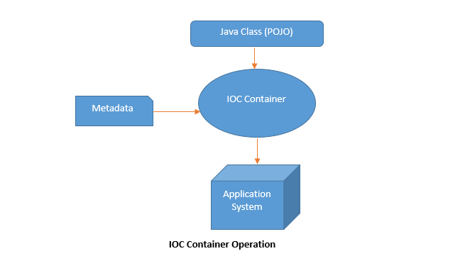
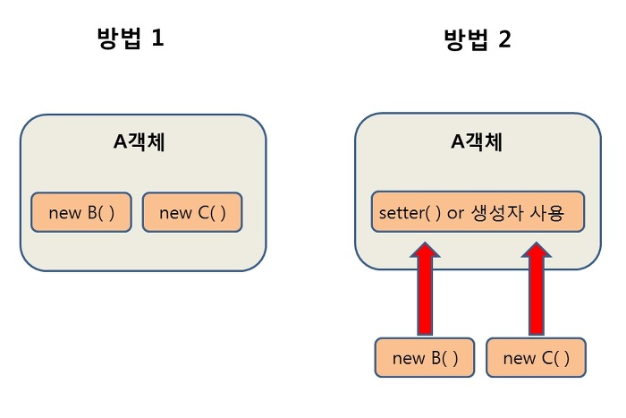
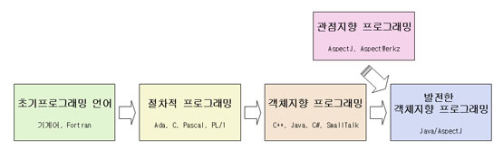

스프링 프레임 워크

Spring 프레임워크는 Java 기반의 오픈 소스 애플리케이션 개발 프레임워크입니다.
스프링의 대표적인 주요 특징으로는
Inversion of Control (IoC)
의존성 주입(Dependency Injection, DI)
관점 지향 프로그래밍(Aspect-Oriented Programming, AOP)
통합 지원
경량화와 확장성
이 있습니다.
Ioc 란
IoC(Inversion of Control)란 "제어의 역전" 이라는 의미로,
말 그대로 메소드나 객체의 호출작업을 개발자가 결정하는 것이 아니라, 외부에서 결정되는 것을 의미한다.
Spring은 IoC 컨테이너를 제공하여 개발자가 객체의 생명주기를 관리하고
의존성 주입(Dependency Injection)을 통해 객체 간의 결합도를 낮출 수 있게 합니다.
이를 통해 코드의 가독성과 유지보수성이 향상됩니다.
의존성 주입이란
Spring은 객체 간의 의존성을 자동으로 주입해주는 DI 기능을 제공합니다.
객체 간의 결합도를 낮추고 테스트 용이성을 높이는 데 도움이 됩니다.
첫번째 방법은 A객체가 B와 C객체를 New 생성자를 통해서 직접 생성하는 방법이고,
두번째 방법은 외부에서 생성 된 객체를 setter()를 통해 사용하는 방법이다.
이러한 두번째 방식이 의존성 주입의 예시인데,
A 객체에서 B, C객체를 사용(의존)할 때 A 객체에서 직접 생성 하는 것이 아니라 외부(IOC컨테이너)에서 생성된 B, C객체를 조립(주입)시켜
setter 혹은 생성자를 통해 사용하는 방식이다.
관점 지향 프로그래밍이란
Spring은 AOP를 지원하여 핵심 비즈니스 로직과 공통적인 관심 사항(로깅, 트랜잭션 관리 등)을 분리하여 모듈화할 수 있습니다.
이를 통해 코드 중복을 줄이고 유연한 개발이 가능해집니다.
DI가 의존성(new)의 주입이라면, AOP는 기능(logic)의 주입이라 할 수 있습니다.
통합 지원이란
Spring은 다양한 개발 영역에서의 통합을 지원합니다.
데이터베이스 접근, 웹 개발, 보안, 메시징 등 다양한 모듈을 제공하고 관련 설정을 간편하게 처리할 수 있습니다.
경량화와 확장성이란
Spring은 경량 프레임워크로서 필요한 모듈만 선택하여 사용할 수 있습니다.
또한, 다른 프레임워크와의 통합이 용이하며 확장성이 뛰어나 개발자가 필요에 따라 유연하게 커스터마이징할 수 있습니다.